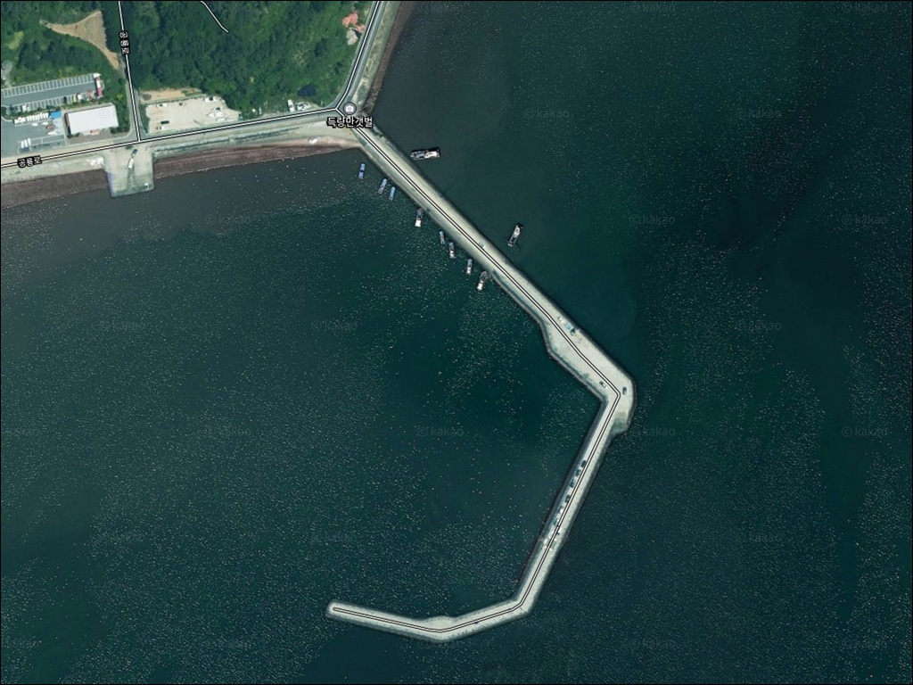
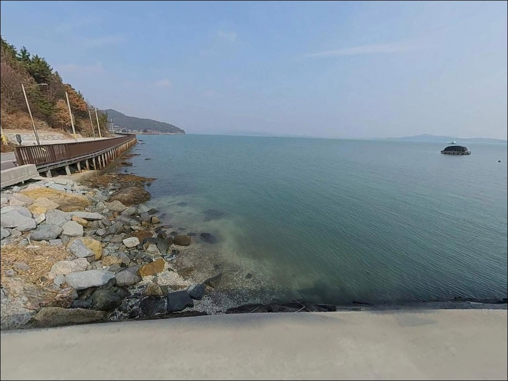
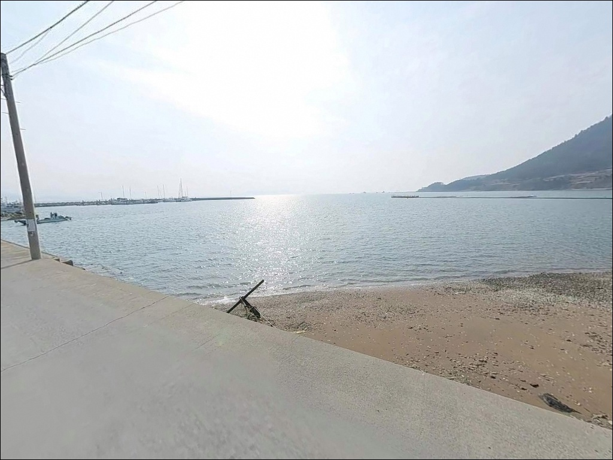
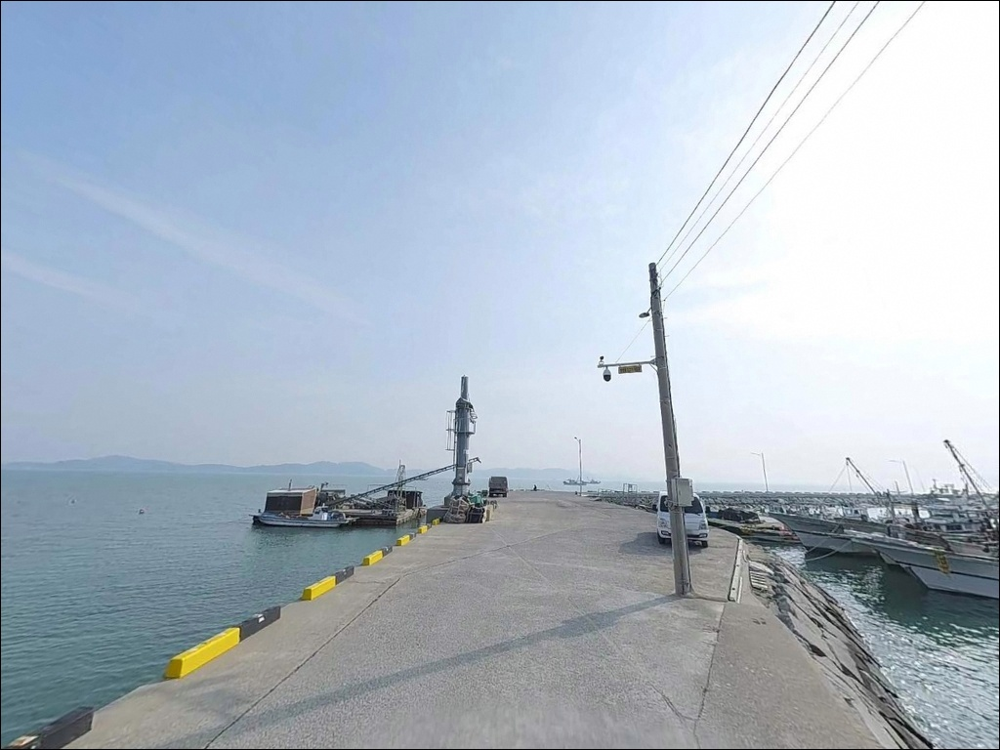
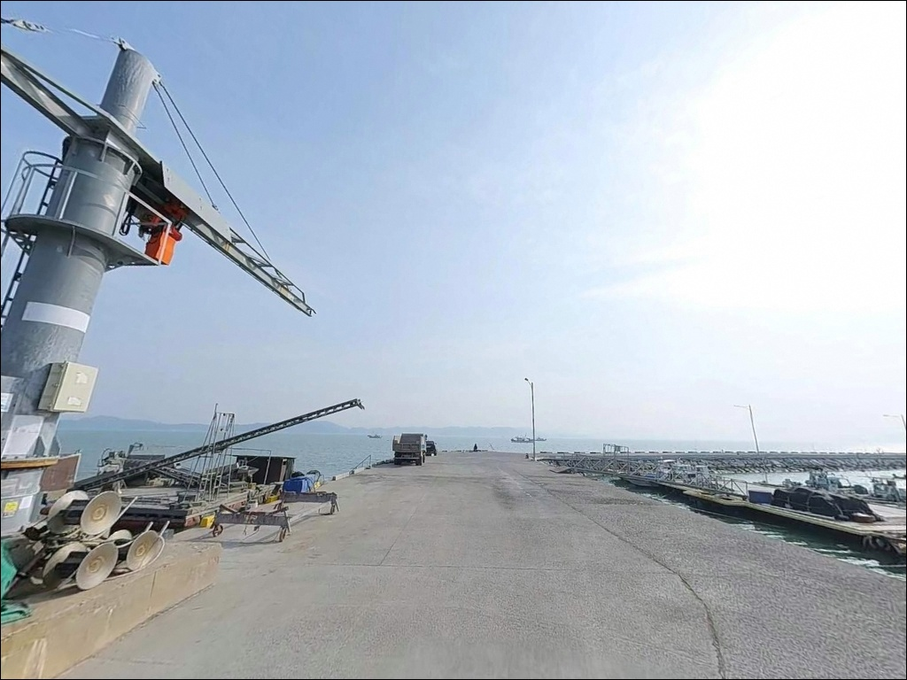
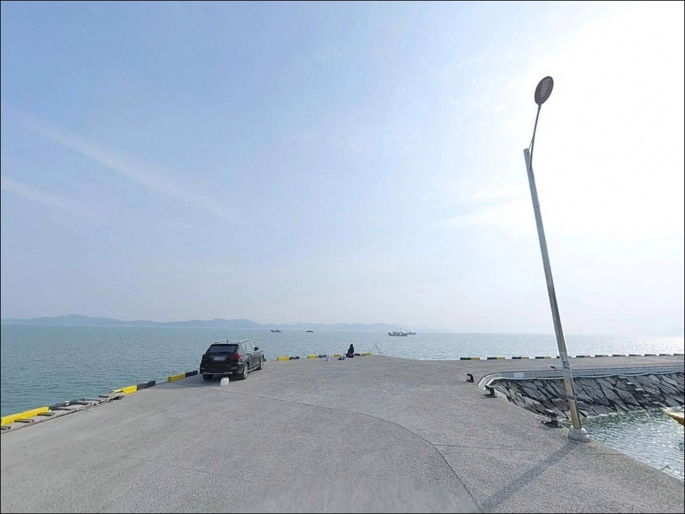
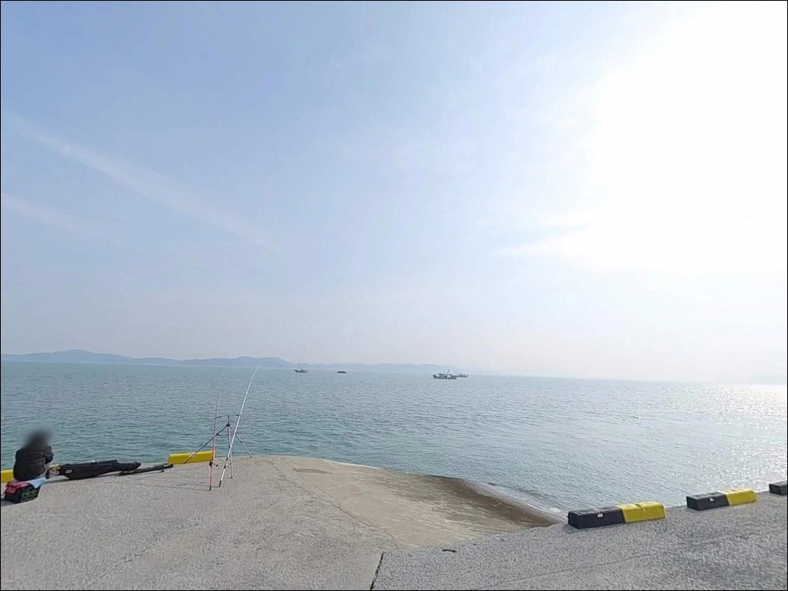
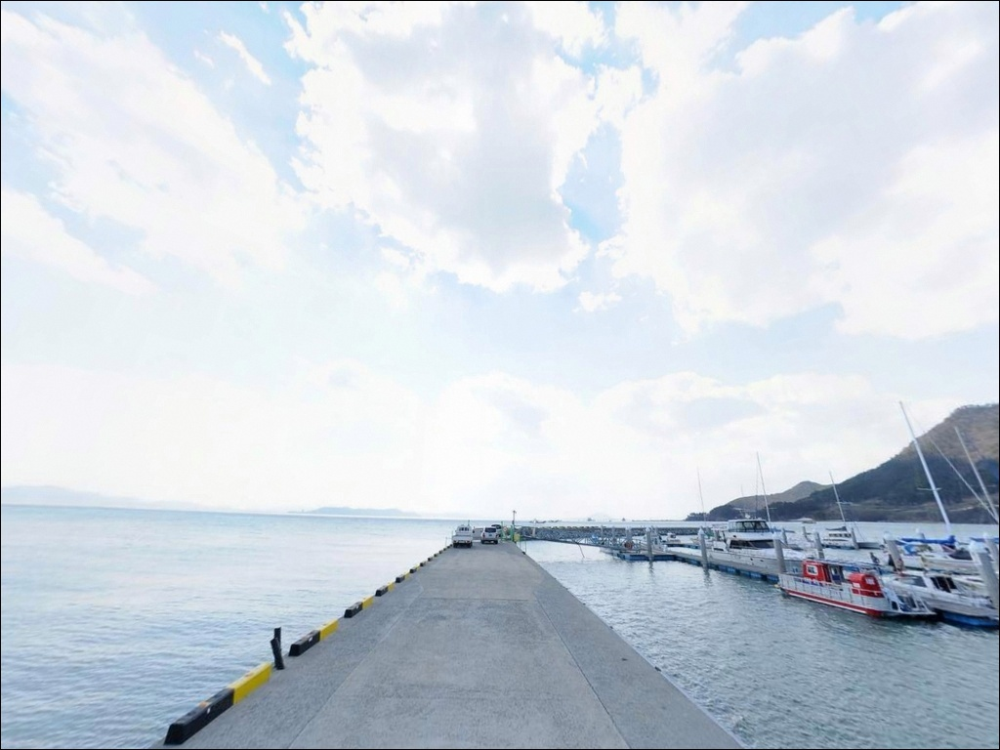
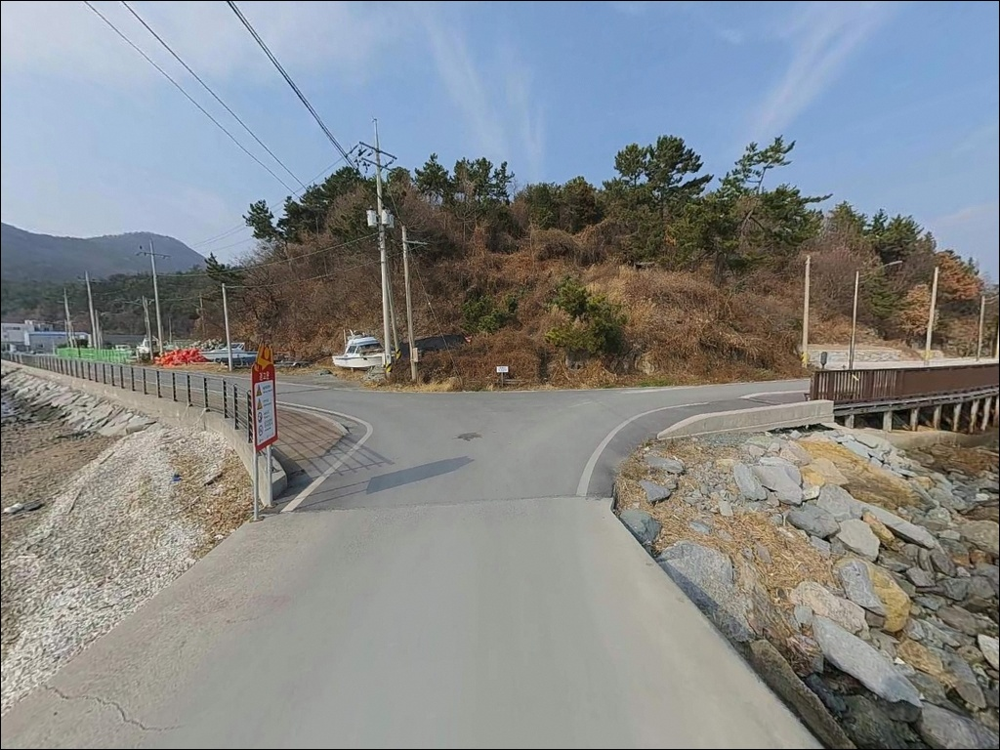

청암선착장, 전남 보성군 방파제 끝자락 숨은 바다 차박 낚시 명당 스팟
이 페이지에는 광고(제휴 링크 포함)가 있으며, 광고 링크를 통해 구매하면 운영자가 판매 수익 또는 수수료를 받을 수 있습니다. 포인트 사진: 카카오맵 스카이뷰·로드뷰. 이 페이지의 지도·사진 이미지는 카카오맵의 실제 서비스 이미지와 다를 수 있습니다.


포인트 안내
청암선착장
전남 보성군 득량면 비봉리 551-11
득량만 내만 선착장이라고 해서
물때를 가볍게 보고 진입하면
간조에 갯벌이 드러나 낚시 자체가 불가능해집니다.
이 선착장은 수심이 선착장 끝단 기준으로
만조 전후에 집중적으로 활용 가능한 구조라,
방문 시각이 조과를 좌우하는 포인트입니다.
전남 보성군 득량면 비봉리에 자리한 청암선착장은
어촌정주어항으로 지정된 공식 선착장입니다.
선착장 길이 330m, 물양장 200m 규모로,
내만형 구조 덕분에 파도 영향이 거의 없고
발판이 콘크리트와 석축으로 안정되어 있어
연중 생활낚시 포인트로 활용되는 곳입니다.
남파랑길 76·77코스가 이 해안을 경유하는 탓에
낚시꾼보다 트레킹객이 먼저 아는 선착장이기도 합니다.
이 글은
청암선착장의 진입 동선, 차박 여건,
물때 판단 기준, 낚시 스타일별 공략 조건에 집중합니다.
조황 단정이나 특정 어종 보장은
이 글의 범위에 포함되지 않습니다.

1. 진입 동선과 포인트 접근성
청암선착장 진입은 득량면 해안도로,
공룡로 방향에서 비봉리 청암마을로 이어지는
포장도로를 따라 차량 직접 진입이 가능합니다.
선착장 끝단까지 포장 상태가 유지되는 구조라
승용차와 소형 SUV 기준으로는
진입 과정에서 별다른 어려움이 없는 편입니다.
다만 마을 생활도로와 겹치는 구간이 있어
캠핑카나 대형 트레일러 차량은
선착장 직전 공터에서 일찍 회차하는 편이 안전합니다.
선착장 인근에는 소형 공터와 도로변 주차 공간이 확보되어 있으며,
어선 이동 동선을 막지 않는 위치를 먼저 파악하고
자리를 잡는 것이 기본입니다.
남파랑길 안내 기록을 보면
선착장 입구 공터에 차량 여러 대가
동시에 서는 공간이 확보되어 있습니다.
비봉공룡공원 주차장(약 1.5km 거리)을 거점으로 삼고
걸어서 포인트에 접근하는 방법도
대형 차량에는 현실적인 대안이 됩니다.

2. 차박 환경과 야간 체류 여건
청암선착장은 비봉리 청암마을 앞에 자리해
민가와 가까운 구조입니다.
생활도로와 버스 정류장이 함께 있어
완전한 고립형 차박지와는 거리가 있습니다.
야간에도 마을 생활 조명이 일부 남아 있어
어둠은 덜하지만, 주민 생활권과 겹치는 만큼
소음과 차박 장비 설치는 최대한 절제해야 합니다.
득량만 내만 구조라 파도와 너울은 거의 없고
바람 영향도 외해 방파제에 비해 적습니다.
낚시를 마치고 이른 아침까지 머무는 용도라면
환경 자체는 나쁘지 않습니다.
다만 전용 차박지가 아닌 마을 앞 생활선착장이라는 점을
전제로 삼고 이용 방식을 정해야 합니다.
야간 조명이 충분하지 않은 구간이 있으므로
헤드랜턴은 필수이며,
인근 비봉공룡공원 주차장이나
율포솔밭해수욕장 일대 주차장이
보다 안정적인 야간 차박 거점이 됩니다.


3. 주변 편의시설 및 인프라 현황
청암선착장에서 도보 또는 차량으로 가장 가까운
편의시설은 비봉공룡공원입니다.
선착장에서 약 1.5km 거리이며,
공원 내에 편의점과 식당이 운영됩니다.
공중화장실은 공룡공원 입구 인근에서
약 800m 이내에 이용 가능합니다.
선착장에서 200~500m 거리에는
득량만 바다낚시공원이 있습니다.
주차장과 편의시설, 낚시교가 갖춰진 유료 시설로
낚시 소품이나 기본 물품을 현장에서 보완하기에
유용한 인접 인프라입니다.
대형 마트나 주유소는 보성읍 방향으로
자동차로 약 20~25분 거리에 집중되어 있습니다.
식수와 연료는 출발 전에 갖춰두는 것이
현장 도착 후 불필요한 이동을 줄이는 방법입니다.

4. 물때를 모르고 가면 낚시가 되지 않는 이유
청암선착장 방문 전 가장 먼저 확인할 것은
물때입니다.
득량만 내만은 조차가 크고
간조 시 갯벌이 넓게 드러나는 구조라,
조금 전후 만조 타이밍이 아니면
선착장 앞 수위가 낮아져
원투나 찌낚시 자리 자체가 사라집니다.
바다타임에서 비봉리 기준 물때를 확인하고
만조 전후 2~3시간을 노려 출발 시각을 맞추는 것이
이 포인트의 기본 전략입니다.
비봉리 선소해안 일대는
공룡알 화석산지(천연기념물 제408호) 지정 구역이
약 3km 해안에 걸쳐 있습니다.
청암선착장이 해당 구역 경계에 포함되는지는
현장에서 확인이 필요하며,
구역 내에서는 자연훼손 행위와 지정 외 야영·취사가 금지됩니다.
방문 전 보성군청 또는 문화재청에 확인하는 것이
안전한 출조 준비입니다.
암초 구간이 일부 있어 밑걸림이 생길 수 있으므로
여분 채비를 넉넉히 챙기는 편이 좋습니다.
미끄러운 석축과 이끼 구간은
발판에 주의가 필요하고,
어선 이동 동선과 겹치지 않도록
자리를 정하는 것이 기본 매너입니다.

5. 지형 기반 낚시 여건 분석
청암선착장은 득량만 내만 최심부 쪽에 가까운
어촌정주어항입니다.
선착장 길이 330m, 물양장 200m로 구성되며,
내항 석축과 콘크리트 구조물 덕분에
발판이 안정적이어서 야간에도 낚시가 수월한 편입니다.
외해 차단형 내만 구조라 파도 영향이 거의 없고
조류 흐름이 완만하게 형성되는 특성이 있습니다.
수심은 내만 특성상 전반적으로 얕은 편이며,
선착장 끝단 쪽으로 갈수록 수심이 깊어지는 구조입니다.
사리 물때에는 조류 흐름이 강해지는 경우가 있고,
바닥 저질은 모래와 뻘이 섞인 구간이 주를 이룹니다.
선착장 끝단 외항 방향과 방파제 측면의
수심 변화 구간이 낚시 자리 선택의 핵심입니다.
득량만 내만형 구조에서 기대해 볼 수 있는 어종은
감성돔, 숭어, 도다리, 붕장어, 학꽁치, 노래미 등입니다.
수온이 오르는 늦봄~초가을이 어종 활동이
가장 활발한 시기이며,
출조 전에 득량만 일대 조황 검색을
꼭 해보시는 것을 권합니다.
원투낚시란 무게가 있는 봉돌을 달아 멀리 캐스팅하여
바닥층 어종을 공략하는 낚시 방식입니다.


6. 포인트에 어울리는 낚시 스타일
이 포인트에서 가장 기본이 되는 방식은 원투낚시입니다.
선착장 외항 방향으로 멀리 투척하면
모래와 뻘이 섞인 바닥층을 공략하기 좋습니다.
내만 특성상 조류가 강하지 않아
채비가 안정적으로 바닥에 안착하며,
만조 전후 수심이 확보된 타이밍에 집중하는 것이
이 방식의 핵심입니다.
찌낚시는 수심이 깊지 않아
저부력 채비를 활용한 운용이 어울립니다.
선착장 끝단과 방파제 인접 구간에서
감성돔을 기대해 볼 수 있는 자리이며,
릴찌낚시란 릴을 이용해 멀리 흘리며
감성돔 등 대형 어종을 공략하는 낚시 방식입니다.
조류가 살아있는 만조 전후 타이밍에
집중적으로 운용하는 방식이 이 포인트에 맞습니다.
루어낚시도 보조 스타일로 활용할 수 있습니다.
선착장 석축 주변과 방파제 구조물 하단을
소형 루어로 탐색하는 방식이 어울립니다.
조류가 완만한 내만이라 루어 조작이 수월하며,
활성도가 높은 시기에 숭어·노래미 등이
바닥층에서 반응하는 경우를 기대해 볼 수 있습니다.

7. 대안 포인트와 플랜 B 동선
청암선착장에서 낚시 여건이 여의치 않거나
편의시설이 더 필요한 상황이라면
득량만 바다낚시공원(선소항)이 첫 번째 대안입니다.
선착장에서 200~500m 거리로 매우 가까우며,
170m 연결교 끝에 80m 해상낚시교가 설치된 정비된 시설입니다.
원투낚시 전용 운용이며 입장료가 발생하지만,
안전시설과 편의시설이 갖춰져 있어
기대 이하의 조황에 대한 현실적인 대안이 됩니다.
같은 득량만 해안선에서 선소항 방파제도
유사한 해역 조건을 공유하는 연안 낚시 포인트로 활용됩니다.
해평항 역시 3km 이내에 위치한 소형 어항으로,
청암선착장과 구조가 비슷해
동일 동선에서 복수 포인트를 묶어 탐색하기에
적합한 대안 자리입니다.
야간 체류나 샤워·식사 동선을 고려한다면
율포솔밭해수욕장 방향이 유용합니다.
해수욕장, 해수탕, 식당가가 이어져 있어
낚시 후 이동해 숙박과 식사를 해결하는
당일 출조+이동 숙영 동선으로 구성할 수 있습니다.

물때 맞추고 들어서면
청암선착장이 달라 보입니다
원투낚시나 찌낚시를 즐기는 낚시인이라면
청암선착장의 내만형 구조는 잘 맞는 편입니다.
발판이 안정적이고 파도 영향이 거의 없어
야간 낚시에도 무리가 없으며,
인근 득량만 바다낚시공원을 함께 묶으면
하루 동안 복수 자리를 탐색하는 동선이 가능합니다.
다만 물때를 계산하지 않고 간조 시간에 진입하면
갯벌이 드러나 낚시 자리가 사라지는 상황을
맞이할 수 있습니다.
물때 확인, 진입로 파악, 자급 준비,
이 세 가지를 갖추고 간다면
조용한 내만 포인트로서 기억에 남는 출조가
될 수 있는 곳입니다.
낚시를 마치고 공룡알 화석산지가 이어지는
득량만 해안선을 따라 차를 세우고 하룻밤 머문다면,
이 지역 특유의 조용한 내만 분위기가
차박 여행의 마무리로 나쁘지 않습니다.